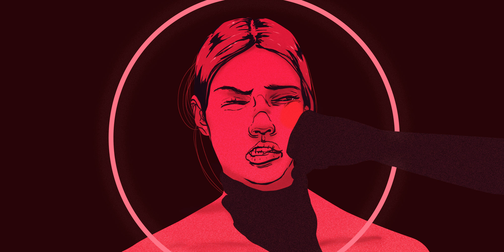

Humanity is accustomed to following stereotypes and labelling, women are usually labelled and judged only by our actions, tastes, decisions... We are hurted nos only physically, but also psicollogicaly.
It ia a violent action that occurs without any consent of the person, there are many thing that are considered sexual abuse like: Contact without the consent, rape, unwanted touching, exhibition, threat...
They can be "minimum" actions that asigns roles "proper to the sex" or being placed in a position infirior to men, without considering the womens opinion and underestimating.
Any action, omission or behaviour, intended to cause, directly or indirectly, physical, psychological or moral harm to a worker.
Physical violence against women is an action that cause damage or suffering to your boy, such as injuries, wounds. blows or any abuse that affects your integrity.
We are focusing on women discrimination that can be presented in many places like school, sport, job, house...
It is a thought nested, sexualized, bifurcated, binary, or said with a tecnicality, a dichotomous thought.
It is a method to reduce the execution time of an algorithm. This is the most optimal solution of the problem, the shortest way. The original problem is divided into subproblems. The subproblems are resolved. The solutions of the subproblems are occupied to create a solution to the original problem. This will help us to see what kind of violence towards women is the most frequent